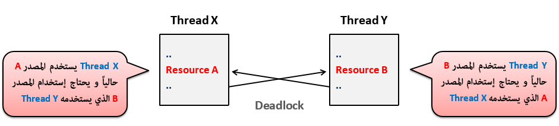
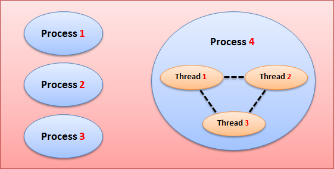

Pythonتعدد المهام في بايثون
مفهوم تعدد المهام في بايثون
عندما تستخدم هاتفك أو حاسوبك, ترى أنه يمكنك تشغيل عدة برامج مع بعض في وقت واحد, كل برنامج شغال في الذاكرة يعتبر Process, فمثلاً إذا قمت بتشغيل خمسة برامج مع بعض فهذا يعني أن نظام التشغيل ينظم عمل خمسة Processes مع بعض. آلية تشغيل عدة برامج مع بعض تسمى Multiprocessing.
من جهة اخرى, في البرنامج الواحد يمكنك تنفيذ عدة أوامر مع بعض و جعل المستخدم يشعر كأنها تتنفذ في وقت واحد, فمثلاً في حال كنت تلعب لعبة مثل لعبة كرة القدم, تجد أنه هناك عدة أشياء تحدث في وقت واحد, فمثلاُ عند تشغيل اللعبة تسمع عدة أصوات ( مثل أغنية حماسية, صوت المعلق, صوت المشجعين, صوت صفارة الحكم في حال وقع خطأ إلخ.. ), بالإضافة إلى أنه يمكنك تحريك اللاعب و مشاهدة توقيت المبارة و الكثير من التفاصيل الأخرى التي تحدث كلها في نفس الوقت لتصنع لك لعبة رائعة. هذه الآلية تسمى Multithreading, لأن كل جزء شغال في البرنامج يكون عبارة عن مجموعة أوامر موضوعة بداخل Thread خاص.
إذاً نستخدم آلية Multithreading لجعل البرنامج قادر على تنفيذ عدة أوامر مع بعض و كأنها تتنفذ في وقت واحد, و هذا ما سنتعلمه في هذا الدرس.
أهمية تعدد المهام
جعل المستخدم قادر على تنفيذ عدة عمليات مع بعض في نفس الوقت.
جعل تصميم التطبيقات أجمل و إضافة مؤثرات فيه.
كل Thread تقوم بتشغيله, يعمل بشكل منعزل عن باقي الأوامر الموجودة في البرنامج, و بالتالي فإنه في حال وقوع أي خطأ في الـ Thread فإنه لن يؤثر على باقي الأوامر الموجود في البرنامج, كما أنه لا يؤثر على أي Thread آخر شغال في البرنامج.
طريقة إنشاء Thread في بايثون
في البداية, إبتداءاً من الإصدار 2.4 في بايثون, أصبح الموديول threading هو الموديول الذي يستخدم لإنشاء Threads.
هذا الموديول عبارة عن موديول جاهز في بايثون, و هو يحتوي على الكلاس Thread الذي يستخدم لبناء Thread و التحكم به.
إنتبه
قبل هذا الموديول كان يوجد موديول إسمه _thread يستخدم لهذا الغرض أيضاً لكنه لم يعد يستخدم الآن و سيتم إلغاؤه مستقبلاً.
لذلك ننصح بعدم استخدام الموديول _thread أو الإعتماد عليه.
خطوات بناء Thread
يجب تضمين الموديول threading.
بناء كلاس يرث من الكلاس Thread و تفعل Override لدالة إسمها run(), و فيها تضع الأوامر التي تريدها أن تتنفذ عندما يتم تشغيل الـ Thread.
خطوات تشغيل Thread
يجب إنشاء كائن من الكلاس الذي يرث من الكلاس Thread.
من هذا الكائن, نقوم باستدعاء دالة جاهزة إسمها start() و التي ستقوم بشكل تلقائي باستدعاء الدالة run() و تنفيذ الأوامر الموضوعة فيها.
في المثال التالي قمنا بإنشاء كلاس إسمه Worker يرث من الكلاس Thread.
في الدالة __init__() الخاصة بهذا الكلاس, قمنا بتعريف خاصية إسمها name لأننا ننوي إعطاء إسم لكل كائن ننشئه من هذا الكلاس.
كما أننا جعلناها تستدعي الدالة __init__() الموجودة في الكلاس Thread لنكون قادرين على معاملة أي كائن ننشئه من هذا الكلاس كـ Thread.
بعدها فعلنا Override للدالة run() بهدف أن تطبع الإسم الذي نضعه في الخاصية name ثلاث مرات عندما يتم تشغيله.
في الأخير, قمنا بإنشاء كائنين من هذا الكلاس و تشغيلهما في وقت واحد.
مثال
Worker.py
import threading # Thread قمنا بتضمين هذا الموديول حتى نستطيع الوراثة من الكلاس
import time # التي سنستخدمها في المثال sleep() قمنا بتضمين هذا الموديول لأنها تحتوي على الدالة
# Thread يرث من الكلاس Worker هنا قمنا بإنشاء كلاس إسمه
class Worker(threading.Thread):
# Thread الموجودة في الكلاس __init__() من أجل إستدعاء الدالة __init__() هنا قمنا بتعريف الدالة
# name أيضاً, من أجل تحديد أنه يجب تمرير إسم للكائن الذي يتم إنشاؤه من الكلاس و الذي سيتم تخزينه في الخاصية
def __init__(self, name):
super(Worker, self).__init__()
self.name = name
# لتحديد ما سيحدث عند تشغيل الكائن الذي ننشئه من هذا الكلاس run() هنا قمنا بتعريف الدالة
def run(self):
# في البداية سيتم طباعة إسم الكائن و أنه قد بدأ تنفيذه
print('Starting', self.name)
# sleep() بعدها سيتم طباعة إسم الكائن 3 مرات. و قمنا باستدعاء الدالة
# و تمرير الرقم 1 لها لتجعل الحلقة تتوقف مدة ثانية في نهاية كل دورة
for i in range(3):
print(self.name)
time.sleep(1)
# في النهاية سيتم طباعة إسم الكائن و أنه قد إنتهى تنفيذه
print('Ending', self.name)
Test.py
# Worker الذي قمنا بإنشائه في الموديول Worker هنا قمنا بتضمين الكلاس
from Worker import Worker
# Threads أي قمنا بإنشاء إثنين .Worker هنا قمنا بإنشاء كائنين من الكلاس
thread1 = Worker('Thread-1')
thread2 = Worker('Thread-2')
# مرة من كل كائن run() من كلا الكائنين لتشغيلهما. أي سيتم استدعاء الدالة start() هنا قمنا باستدعاء الدالة
thread1.start()
thread2.start()
# لجعل مفسّر لغة بايثون thread2 و thread1 من الكائنين join() هنا وضعنا قمنا باستدعاء الدالة
# قبل أن يتابع تنفيذ باقي الأوامر الموجودة في الملف thread2 و thread1 ينتظر أن يتوقف الكائنين
thread1.join()
thread2.join()
# تماماً, سيتم تنفيذ أمر الطباعة التالي thread2 و thread1 بعد أن يتوقف الكائنين
print('Both threads are end')
•سنحصل على نتيجة تشبه النتيجة التالية عند تشغيل الملف Test.
Starting Thread-1
Thread-1
Starting Thread-2
Thread-2
Thread-2
Thread-1
Thread-2
Thread-1
Ending Thread-2
Ending Thread-1
Both threads are end
ملاحظة
في المثال السابق, يمكنك حذف السطر 12 لأن الكلاس Worker ورث أيضاً خاصية إسمها name من الكلاس Thread.
لهذا, يمكنك تمرير الإسم مباشرةً إلى الخاصية التي ورثها الكلاس Worker بدل تعريفها فيه من جديد.
معلومة تقنية
عند تشغيل أكثر من Thread في وقت واحد, لا يمكنك ضمان أو تحديد أي Thread سيتنفذ أو ينتهي قبل الآخر.
السبب في ذلك أن معالج الحاسوب ( CPU ) سيقوم بإرسال كل Thread قمت بتشغيله إلى نواة ( Core ) حتى ينفذهم لك في وقت واحد.
و منطقياً, النواة التي عليها ضغط أقل ستنتهي من تنفيذ أوامر الـ Thread بشكل أسرع.
لهذا السبب, إذا قمت بتشغيل المثال السابق أكثر من مرة, ستجد أنك في كل مرة ستحصل على نتيجة مختلفة عن التشغيل.
مفهوم الـ Main Thread في بايثون
في بايثون, كل كود يتنفذ في البرنامج, فإنه حتماً يتنفذ بداخل Thread واحد على الأقل.
أي حتى لو لم تقم بوضع الكود بداخل Thread فإنه سيتم وضعه في Thread.
و بالتالي في حال قمت بتشغيل Thread في البرنامج, فهذا يعني أن البرنامج حالياً يعمل فيه إثنين Threads و ليس Thread واحد.
في المثال التالي, قمنا بطباعة عدد الـ Threads الذين يتنفذون حالياً علماً بأننا لم نقم بإنشاء أي كائن من كلاس يرث من الكلاس Thread.
مثال
Worker.py
import threading # Thread قمنا بتضمين هذا الموديول حتى نستطيع الوراثة من الكلاس
# الذين يعملون حالياً Threads هنا قمنا بطباعة عدد الـ
print('Active thread(s) count:', threading.active_count())
# تم تشغيله Thread الأساسي في البرنامج. أي أول Thread هنا قمنا بطباعة إسم الـ
print('Main thread object:', threading.main_thread().name)
# الحالي الذي يتم تنفيذه Thread هنا قمنا بطباعة إسم الـ
print('Current thread object:', threading.main_thread().name)
•سنحصل على نتيجة تشبه النتيجة التالية عند تشغيل الملف Test.
Active thread(s) count: 1
Main thread object: MainThread
Current thread object: MainThread
•نلاحظ أن عدد الـ Threads الذين يتنفذون حالياً هو 1, و هذا يثبت أن الكود الأساسي في البرنامج يتم وضعه في Thread.
•كما أن إسم الـ Thread الأساسي و إسم الـ Thread الذي يتنفذ حالياً هو MainThread.
دوال الموديول threading في بايثون
الجدول التالي يحتوي على دوال الموديول threading الأكثر إستخداماً و التي سبق أن استخدمناها في الأمثلة السابقة.
| إسم الدالة مع تعريفها |
threading.active_count()
ترجع عدد الـ Threads الذين يتنفذون في الوقت الحالي الذي تم فيه إستدعاءها. |
threading.main_thread()
ترجع كائن الـ thread الأساسي في البرنامج.
معلومة: الـ thread الأساسي في البرنامج هو أول Thread بدأ مفسر لغة بايثون بتنفيذ الأوامر الموضوعة فيه. |
threading.current_thread()
ترجع كائن الـ thread الذي يتنفذ في الوقت الحالي الذي تم فيه إستدعاءها. |
threading.enumerate()
ترجع كائن list يحتوي على كل كائن thread يتنفذ في الوقت الحالي الذي تم فيه إستدعاءها.
ملاحظة: لا ترجع أي thread تم إيقافه أو لم يتم تشغيله من الأساس. |
خصائص و دوال الكلاس Thread في بايثون
الجدول التالي يحتوي على دوال الكلاس Thread الأكثر إستخداماً و التي سبق أن استخدمناها في الأمثلة السابقة.
| إسم الدالة مع تعريفها |
run()
نفعل لها Override لنضع فيها الأوامر التي نريدها أن تتنفذ عند تشغيل كائن الـ Thread. |
start()
تستخدم لتشغيل كائن الـ Thread الذي قام باستدعائها.
فعلياً, الدالة start() تقوم فقط باستدعاء الدالة run() لتنفيذ الأوامر الموضوعة فيها.
إنتبه: لا يمكن تشغيل نفس كائن الـ Thread أكثر من مرة. أي لا يمكن إستدعاء الدالة start() أكثر من مرة من نفس كائن الـ Thread.
في حال تم استدعاء الدالة start() مرتين من نفس كائن الـ Thread فإنها ترمي الإستثناء RuntimeError. |
is_alive()
ترجع True طالما أن كائن الـ Thread لم ينتهي تنفيذه بعد حتى لو كان لم يتم البدء بتنفيذه أصلاً.
غير ذلك ترجع False. |
join(timeout=None)
تجعل كائن الـ Thread الذي قام باستدعائها ينتظر إلى أن ينتهي تنفيذ الـ Thread الذي يعمل قبله قبل أن يبدأ هو بتنفيذ الأوامر الموجودة فيه.
في حال أردت تأخير تنفيذ الـ Thread الذي سيعمل عند إنتهاء تنفيذ الـ Thread لمدة محددة فيمكنك تمرير رقم مكان الباراميتر timeout يمثل هذه المدة, مع الإشارة إلى أن الرقم الذي تمرره يمثل مدة الإنتظار بالثواني. فمثلاً إذا قمت بتمرير الرقم 1.5 فهذا يعني أنك تقصد ثانية و نصف.
معلومة تقنية
هذه الدالة مهمة عند الحاجة لجعل الـ Threads يتنفذوا الواحد تلو الآخر بدل أن يتنفذوا في وقت واحد و يسببوا مشكلة يقال لها Deadlock.
و لا تقلق إذا لم تكن تعرف المقصود من مصطلح Deadlock الآن لأنك ستفهمها لاحقاً من الأمثلة.
في حال وجد مترجم لغة بايثون أن عندما سيتم تشغيل الـ Thread سيحدث Deadlock, سترمي الإستثناء RuntimeError. |
الجدول التالي يحتوي على خصائص الكلاس Thread.
| إسم الخاصية مع تعريفها |
name
ترجع الإسم الذي تم إعطاؤه لكائن الـ Thread الذي قام باستدعائها.
فعلياً, عند إنشاء كائن من الكلاس الذي يرث من الكلاس Thread يمكنك تمرير الإسم الذي تريد إعطاؤه له لحظة إنشاءه. |
ident
ترجع رقم التعرفة ( ID ) الذي يتم توليده بشكل عشوائي و إعطائه لكائن الـ Thread الذي قام باستدعائها. |
daemon
هذه الخاصية يمكن الإستفادة منها في حال كنت تنوي تشغيل Thread من داخل Thread آخر.
إذا مررت لها القيمة True قبل أن تقوم بتشغيل الـ Thread الآخر, سيفهم مترجم لغة بايثون أنك تنوي إيقاف الـ Thread الآخر بشكل تلقائي عندما يتوقف الـ Thread الذي قام باستدعائه في الأساس. كما أنه في حال كان الـ Thread الآخر متصل بملف, بقاعدة بيانات, أو بالإنترنت إلخ.. فإن إغلاقه بشكل مفاجئ لا يضمن أن يتم إغلاق الإتصالات التي كان يجريها.
في حال وجد مترجم لغة بايثون أن عندما سيتم تشغيل الـ Thread سيحدث Deadlock, سترمي الإستثناء RuntimeError. |
المزامنة في بايثون
في حال كنت تريد تشغيل أكثر من Thread في نفس الوقت, يجب أن تنتبه جيداً إلى العمليات التي سيجريها كل Thread تنوي تشغيله لأن هذا الأمر قد يسبب لك مشاكل منطقية أو يعطيك نتائج خاطئة كما سنوضح لك في السيناريوهات التالية.
السيناريو الأول
في حال قمت ببناء Thread مهمته جلب علامات الطالب المخزنة في قاعدة بيانات و من ثم حساب معدله العام, و بعدما تم حساب المعدل و عرض المعدل للطالب, قام Thread آخر بتعديل بعض العلامات في قاعدة البيانات لأنه وجد أن الطالب عنده غياب كثير.
إذاً, النتيجة التي أعطانا إياها الـ Thread الأول في هذه الحالة ليست صحيحة, حيث أنه كان يفترض حساب المعدل بعد أن تم إدخال أيام الغياب ضمن المعادلة التي تحسب له معدله النهائي و تعرض له إن كان ناجحاً بناءاً على معدله النهائي و عدد الأيام التي حضر فيها إلى الجامعة.
فعلى سبيل المثال, قد يكون من شروط الجامعة أنه في حال تغيّب الطالب مدة 30 يوم خلال الفصل الواحد, يعتبر راسباً في كل المواد.
إذاً, لحل المشكلة السابقة, كان يجب مزامنة عمل الـ Thread الأول و الـ Thread الثاني.
أي كان يجب تشغيل الـ Thread الذي يجلب أيام الغياب أولاً.
ثم بعد تخزين أيام الغياب و توقف الـ Thread عن العمل, يجب تشغيل الـ Thread الذي يجلب علامات الطالب و يعطيه النتيجة النهائية.
السيناريو الثاني
في حال كان يوجد Thread يريد تعديل محتوى ملف, و كان يوجد Thread آخر يقوم بقراءة محتوى نفس الملف.
في هذه الحالة, سيحدث أيضاً خطأ و هو أن الـ Thread الذي يقوم بالقراءة, سيقرأ محتوى الملف القديم, بدون معرفة أنه قد تم تحديث محتوى هذا الملف في الوقت الذي كان يقرأ منه و يجري عمليات ما بناءاً على المحتوى الذي قرأه وقتها.
لحل هذه المشكلة, كان يجب مزامنة عمل الـ Thread الذي يقرأ من الملف و الـ Thread الذي يعدل في الملف لضمان أن لا يتعاملا معه في وقت واحد.
السيناريو الثالث
في حال قمت بتشغيل إثنين Threads, و في مرحلة ما أصبح الإثنين عالقين بسبب أن الـ Thread الأول بحاجة للوصول إلى شيء يستخدمه الـ Thread الثاني. و بنفس الوقت الـ Thread الثاني بحاجة للوصول إلى شيء يستخدمه الـ Thread الأول. هذه المعضلة تسمى Deadlock, و هي يمكنك تخليها كما في الصورة التالية.

لحل هذه المشكلة, كان يمكن تشغيل كل Thread على حدا.
في المثال التالي قمنا بتعديل المثال السابق لجعل الـ Threads الذين ننشأهم من الكلاس Worker يعملون بطريقة متزامنة, أي الواحد تلو الآخر و ليس مع بعض.
ما فعلناه ببساطة, هو إنشاء كائن من الكلاس Lock, ثم وضع الكود الذي نريده أن يتنفذ بشكل متزامن بداخل بلوك من هذا الكائن.
ملاحظة: قمنا بتعليم الأسطر التي قمنا بإضافتها على الكود السابق باللون الأصفر.
مثال
Worker.py
import threading # Thread قمنا بتضمين هذا الموديول حتى نستطيع الوراثة من الكلاس
import time # التي سنستخدمها في المثال sleep() قمنا بتضمين هذا الموديول لأنها تحتوي على الدالة
# لأننا سنستخدمه لجعل أي كائن ننشئه من الكلاس يعمل بطريقة متزامنة Lock هنا قمنا بإنشاء كائن من الكلاس
lock = threading.Lock()
# Thread يرث من الكلاس Worker هنا قمنا بإنشاء كلاس إسمه
class Worker(threading.Thread):
# Thread الموجودة في الكلاس __init__() من أجل إستدعاء الدالة __init__() هنا قمنا بتعريف الدالة
# name أيضاً, من أجل تحديد أنه يجب تمرير إسم للكائن الذي يتم إنشاؤه من الكلاس و الذي سيتم تخزينه في الخاصية
def __init__(self, name):
super(Worker, self).__init__()
self.name = name
# لتحديد ما سيحدث عند تشغيل الكائن الذي ننشئه من هذا الكلاس run() هنا قمنا بتعريف الدالة
def run(self):
# هنا قمنا بجعل الكود يتنفذ بطريقة متزامنة
with lock:
# في البداية سيتم طباعة إسم الكائن و أنه قد بدأ تنفيذه
print('Starting', self.name)
# sleep() بعدها سيتم طباعة إسم الكائن 3 مرات. و قمنا باستدعاء الدالة
# و تمرير الرقم 1 لها لتجعل الحلقة تتوقف مدة ثانية في نهاية كل دورة
for i in range(3):
print(self.name)
time.sleep(1)
# في النهاية سيتم طباعة إسم الكائن و أنه قد إنتهى تنفيذه
print('Ending', self.name)
Test.py
# Worker الذي قمنا بإنشائه في الموديول Worker هنا قمنا بتضمين الكلاس
from Worker import Worker
# Threads أي قمنا بإنشاء إثنين .Worker هنا قمنا بإنشاء كائنين من الكلاس
thread1 = Worker('Thread-1')
thread2 = Worker('Thread-2')
# مرة من كل كائن run() من كلا الكائنين لتشغيلهما. أي سيتم استدعاء الدالة start() هنا قمنا باستدعاء الدالة
thread1.start()
thread2.start()
# لجعل مفسّر لغة بايثون thread2 و thread1 من الكائنين join() هنا وضعنا قمنا باستدعاء الدالة
# قبل أن يتابع تنفيذ باقي الأوامر الموجودة في الملف thread2 و thread1 ينتظر أن يتوقف الكائنين
thread1.join()
thread2.join()
# تماماً, سيتم تنفيذ أمر الطباعة التالي thread2 و thread1 بعد أن يتوقف الكائنين
print('Both threads are end')
•سنحصل على النتيجة التالية عند تشغيل الملف Test.
Starting Thread-1 <-- الأول Thread هنا تم البدء بتنفيذ الـ
Thread-1
Thread-1
Thread-1
Ending Thread-1 <-- الأول Thread هنا إنتهى تنفيذ أوامر الـ
Starting Thread-2 <-- الثاني Thread هنا تم البدء بتنفيذ الـ
Thread-2
Thread-2
Thread-2
Ending Thread-2 <-- الثاني Thread هنا إنتهى تنفيذ أوامر الـ
Both threads are end
في حال أردت تطبيق أسلوب المزامنة بدون إستخدام أسلوب with block:, يجب وضع الكود الذي تريد مزامنته بين الدالتين acquire() و release().
إذاً يمكنك كتابة كود الدالة run() كالتالي و الحصول على نفس النتيجة.
def run(self):
block.acquire() # هنا قمنا بجعل الكود الذي سيتم تنفيذه بعدها يعمل بطريقة متزامنة
print('Starting', self.name)
for i in range(3):
print(self.name)
time.sleep(1)
print('Ending', self.name)
block.release() # هنا قمنا بإيقاف التزامن
تجميع الـ Threads بداخل Queue في بايثون
في حال أردت تشغيل مجموعة Threads بشكل متزامن, يمكنك إنشاء كائن من الكلاس Queue و وضعهم فيه.
بعدها تقوم بإنشاء حلقة للمرور على Thread واحد منهم في كل مرة, و من ثم تقوم بتشغيله.
الجدول التالي يحتوي على دوال الكلاس Queue الأكثر إستخداماً.
| إسم الدالة مع تعريفها |
get()
ترجع العنصر التالي من كائن الـ Queue الذي قام باستدعائها و من ثم تقوم بحذفه منها.
في حالتنا سترجع Thread جديد في كل مرة نستدعيها فيها.
في حال كان كائن الـ Queue و تم استدعاءها فإنها ترمي الإستثناء Empty. |
put(item)
تضيف الكائن الذي نمرره لها كعنصر في كائن الـ Queue الذي قام باستدعائها.
في حالتنا نمرر لها كائن من كلاس يمثل Thread. |
qsize()
ترجع عدد العناصر الموجودة في كائن الـ Queue الذي قام باستدعائها.
في حالتنا عدد الـ Threads الموجودين فيه و الذين لم يتم تنفيذهم بعد. |
empty()
تستخدم لمعرفة ما إن كان كائن الـ Queue الذي قام باستدعائها فارغاً أم لا.
ترجع True إذا كان فارغاً, غير ذلك ترجع False. |
Full()
تستخدم لمعرفة ما إن كان كائن الـ Queue الذي قام باستدعائها ممتلىء أم لا, أي قادر على تخزين عناصر جديدة أم لا.
ترجع True إذا كان عدد العناصر الموضوعة فيه أقل من عدد العناصر التي يمكنه تخزينها, غير ذلك ترجع False. |
في المثال التالي قمنا قمنا بإنشاء ثلاث كائنات تمثل Threads و وضعناهم بشكل مؤقت في list إسمه listWorkers.
بعدها قمنا بتخزين كائنات الـ listWorkers في Queue إسمه queueWorkers.
في الآخير قمنا بتشغيل كل الـ Threads الموضوعين في الكائن queueWorkers.
ملاحظة: جعلنا الـ Threads يعملوا بشكل متزامن.
و بالتالي في حال لم ترد جعلهم يعملوا بشكل متزامن, سيكون عليك فقط إزالة جملة with lock: الموضوعة في الدالة run().
مثال
Worker.py
import threading # Thread قمنا بتضمين هذا الموديول حتى نستطيع الوراثة من الكلاس
import time # التي سنستخدمها في المثال sleep() قمنا بتضمين هذا الموديول لأنها تحتوي على الدالة
# لأننا سنستخدمه لجعل أي كائن ننشئه من الكلاس يعمل بطريقة متزامنة Lock هنا قمنا بإنشاء كائن من الكلاس
lock = threading.Lock()
# Thread يرث من الكلاس Worker هنا قمنا بإنشاء كلاس إسمه
class Worker(threading.Thread):
# Thread الموجودة في الكلاس __init__() من أجل إستدعاء الدالة __init__() هنا قمنا بتعريف الدالة
# name أيضاً, من أجل تحديد أنه يجب تمرير إسم للكائن الذي يتم إنشاؤه من الكلاس و الذي سيتم تخزينه في الخاصية
def __init__(self, name):
super(Worker, self).__init__()
self.name = name
# لتحديد ما سيحدث عند تشغيل الكائن الذي ننشئه من هذا الكلاس run() هنا قمنا بتعريف الدالة
def run(self):
# هنا قمنا بجعل الكود يتنفذ بطريقة متزامنة
with lock:
# في البداية سيتم طباعة إسم الكائن و أنه قد بدأ تنفيذه
print('Starting', self.name)
# sleep() بعدها سيتم طباعة إسم الكائن 3 مرات. و قمنا باستدعاء الدالة
# و تمرير الرقم 1 لها لتجعل الحلقة تتوقف مدة ثانية في نهاية كل دورة
for i in range(3):
print(self.name)
time.sleep(1)
# في النهاية سيتم طباعة إسم الكائن و أنه قد إنتهى تنفيذه
print('Ending', self.name)
Test.py
from Worker import Worker # Worker الذي قمنا بإنشائه في الموديول Worker هنا قمنا بتضمين الكلاس
from queue import Queue # queue الموجود في الموديول Queue هنا قمنا بتضمين الكلاس
# Thread أي وضعنا فيه 3 كائنات تمثل .Worker وضعنا فيه 3 كائنات من الكلاس list هنا قمنا بإنشاء
workerList = [
Worker('Thread-1'),
Worker('Thread-2'),
Worker('Thread-3')
]
# لأننا نريد وضع نفس العناصر بداخله workerList عدد عناصره يساوي عدد عناصر الكائن Queue هنا قمنا بإنشاء كائن
workerQueue = Queue(len(workerList))
# workerQueue و من ثم تضيفه كعنصر في الكائن workerList في كل دورة ترجع كائن من الكائنات الموجودة في for هنا قمنا بإنشاء حلقة
# workerQueue في الكائن workerList في النهاية سيتم وضع كل الكائنات الموجودة في الكائن
for thread in workerList:
workerQueue.put(thread)
# غير فارغ workerQueue لا تتوقف عن تكرار ما بداخلها طالما أن الكائن while هنا قمنا بإنشاء حلقة
# و من ثم تنفيذه workerQueue من الكائن Worker في كل دورة من دورات الحلقة, سيتم إخراج كائن
while not workerQueue.empty():
workerQueue.get().start()
# workerList في كل دورة ترجع كائن من الكائنات الموجودة في for هنا قمنا بإنشاء حلقة
# لكي يجعل مفسّر لغى بايثون لا ينفذ أي أوامر أخرى موجودة بعد الحلقة join() ترجعه سيستدعي الدالة Worker كل كائن
for thread in workerList:
thread.join()
# تماماً, سيتم تنفيذ أمر الطباعة التالي thread3 و thread2 ,thread1 بعد أن تتوقف الكائنات
print('All threads are end')
•سنحصل على النتيجة التالية عند تشغيل الملف Test.
Starting Thread-1 <-- الأول Thread هنا تم البدء بتنفيذ الـ
Thread-1
Thread-1
Thread-1
Ending Thread-1 <-- الأول Thread هنا إنتهى تنفيذ أوامر الـ
Starting Thread-2 <-- الثاني Thread هنا تم البدء بتنفيذ الـ
Thread-2
Thread-2
Thread-2
Ending Thread-2 <-- الثاني Thread هنا إنتهى تنفيذ أوامر الـ
Starting Thread-3 <-- الثالث Thread هنا تم البدء بتنفيذ الـ
Thread-3
Thread-3
Thread-3
Ending Thread-3 <-- الثالث Thread هنا إنتهى تنفيذ أوامر الـ
All threads are end
الفرق بين الـ Process و الـ Thread بشكل عام
Process تعني برنامج شغال حالياً, و قد قام نظام التشغيل بحجز مساحة خاصة له في الذاكرة.
Thread عبارة عن مجموعة أوامر يتم تنفيذها أثناء تنفيذ أوامر أخرى في نفس البرنامج. يمكنك تشغيل أكثر من Thread في نفس الوقت في البرنامج, و يمكن أيضاً مشاركة المعلومات بينهم. مع ملاحظة أنه يتم إنشاء جميع الـ Threads من ضمن المساحة المحجوزة للـ Process في الذاكرة.


 محرر الويب
محرر الويب نظام الألوان
نظام الألوان محول الوحدات
محول الوحدات محلل عناوين الشبكات
محلل عناوين الشبكات